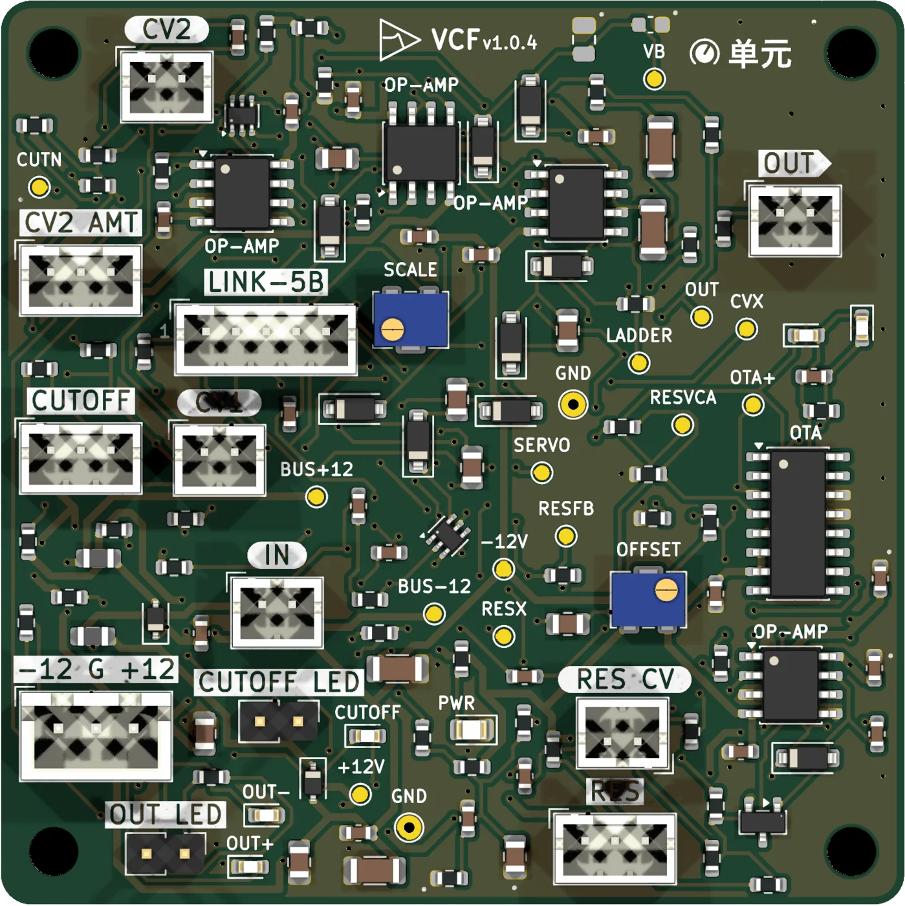
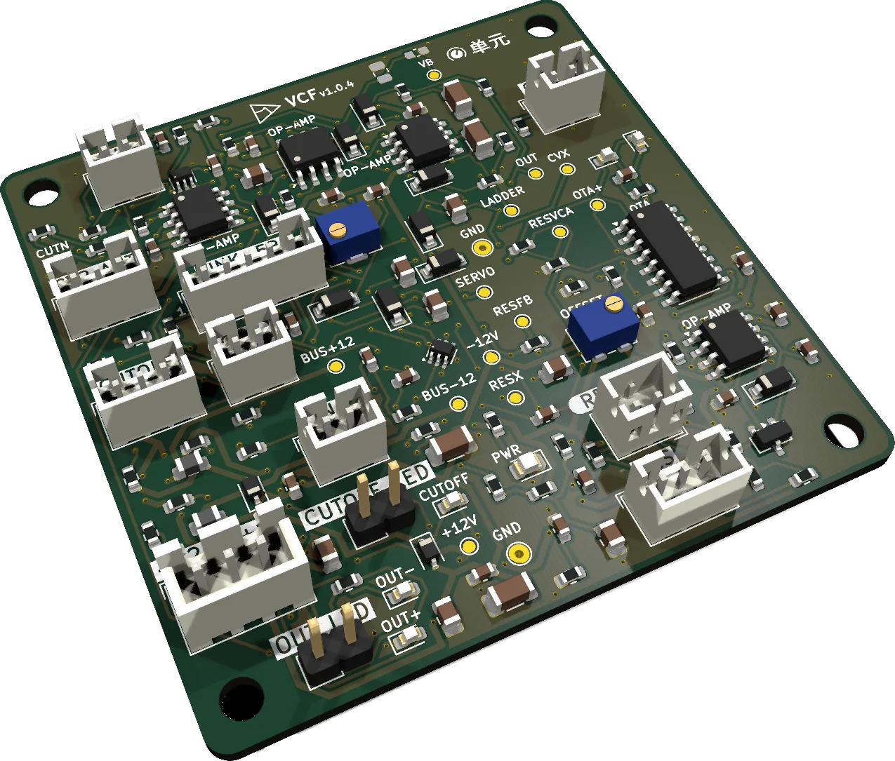
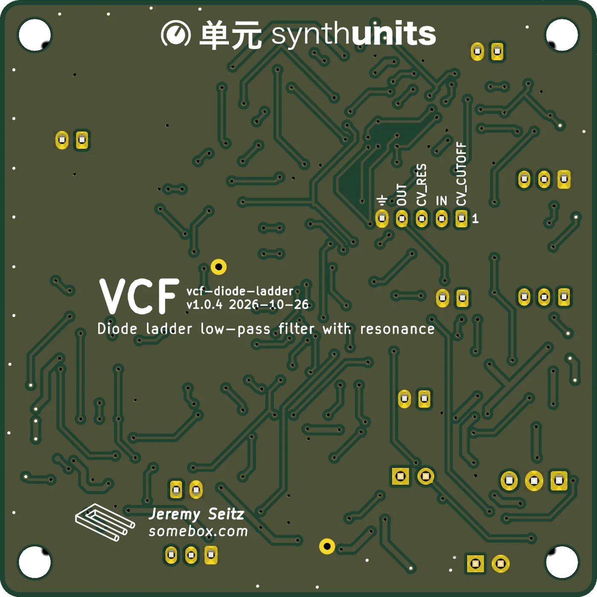
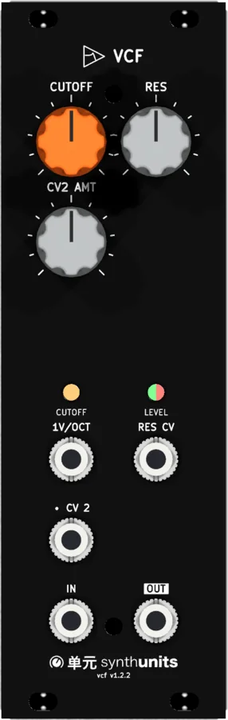

VCF: diode-ladder low-pass
A four-pole diode-ladder low-pass with 1 V/oct cutoff and voltage-controlled resonance that keeps its bass.
A four-pole diode-ladder low-pass in the EMS VCS3 and TB-303 family, with 1 V/oct cutoff and resonance under voltage control up to self-oscillation, on a 60 × 60 mm board. An exponential converter on a matched NPN pair sets the current through the ladder: a transistor pair at the bottom, two strings of four diodes above it, a capacitor across each rung. JFET followers read the top of the ladder, and a differential amplifier on a low-noise audio op-amp brings the signal back up to Eurorack level.
The resonance feedback runs through an OTA used as a VCA, so the RESONANCE knob and RES CV both set its gain. The same VCA subtracts the input from the feedback, which keeps the bass as resonance rises instead of thinning it out, the usual trait of a diode ladder. Two red LEDs clip the feedback at about ±1.8 V, so a loud input at full resonance turns to grit without driving the pair out of its range.
In a voice it sits between the VCO and the VCA, with an envelope into CV2 through CV2 AMOUNT. With RESONANCE up it whistles, and CV1 is scaled for 1 V/oct so the whistle follows a keyboard over a few octaves (in simulation).
- Status
- Being made
- Version
- v1.0.4 (2026-10-26)
- Board
- 60 × 60 mm, 2 layers
- First order
- 5 boards, 2 assembled by the fab
- Rough price
- about $30–40 (how)




Block diagram
Drawn by the site's generator from the board's own data: its blocks, its connectors and the links between them. The pots and switches are listed in the block they set.
What it does
- Audio in: AC-coupled, 100 kΩ; ±5 V gives about ±50 mV at the ladder's pair: a louder input, more grit.
- Passband gain +3.2 dB (×1.45), simulated. Without resonance the knee is gentle: 6 dB down at about 0.4 times the resonant frequency.
- Cutoff: CUTOFF centred near 1 kHz, spanning about ±5 octaves; CV1 at 1 V/oct (100 kΩ); CV2 through CV2 AMOUNT.
- Self-oscillation, simulated: about 0.95, 1.9, 3.8 and 7.4 kHz for CV1 at 0, 1, 2 and 3 V, about 0.7 to 0.9 V p-p, from about 72 % of the RESONANCE knob.
- RES CV: about +0.5 of resonance gain per 5 V; a negative CV only closes the resonance.
- Bass at high resonance, simulated: +3.3 dB at 100 Hz just below self-oscillation (−22 dB before the compensation).
- Output through 1 kΩ.
- Power: about 20 mA on each rail, estimated from the circuit.
- Board: 60 × 60 mm, 2 layers, four M3 holes.
Connections
| Connector | Wire to | Housing | Pins |
|---|---|---|---|
| CV1 (1V/OCT) | a jack (Thonkiconn) | JST PH, 2 pins, top entry | 1 tip, 2 GND |
| CV2 | a jack (Thonkiconn) | JST PH, 2 pins, top entry | 1 tip, 2 GND |
| CV2 AMOUNT (B100K) | a pot (Alpha 9 mm B100K) | JST PH, 3 pins, top entry | 1 CCW, 2 wiper, 3 CW |
| CUTOFF (B100K) | a pot (Alpha 9 mm B100K) | JST PH, 3 pins, top entry | 1 CCW, 2 wiper, 3 CW |
| IN | a jack (Thonkiconn) | JST PH, 2 pins, top entry | 1 tip, 2 GND |
| OUT | a jack (Thonkiconn) | JST PH, 2 pins, top entry | 1 tip, 2 GND |
| RESONANCE (B10K) | a pot (Alpha 9 mm B10K) | JST PH, 3 pins, top entry | 1 CCW, 2 wiper, 3 CW |
| RES CV | a jack (Thonkiconn) | JST PH, 2 pins, top entry | 1 tip, 2 GND |
| POWER (1 -12V, 2 GND, 3 +12V) | a the power board output (straight-through JST XH lead) | JST XH, 3 pins, top entry | 1 −12 V, 2 GND, 3 +12 V |
| LINK-5B | a lead to another module, or open | JST PH, 5 pins, top entry | 1 CV_CUTOFF, 2 IN_VCF, 3 CV_RES, 4 OUT_VCF, 5 GND |
Every panel control has its own connector with a fixed pinout, so any lead of the right size fits any module. Pin 1 is the square pad.
LEDs
On the board: CUTOFF (yellow), OUT+ (yellow), OUT- (red). Pads for a panel LED: CUTOFF LED, OUT LED.
Wiring and setup
- Power: a 3-pin JST XH lead (1 −12 V, 2 GND, 3 +12 V) from one of the power hub's outputs, with a ferrite and a series Schottky on each rail. Check each lead with a meter first.
- Panel: 5 jacks (IN, OUT, CV1 (1V/OCT), CV2, RES CV) and 3 Alpha 9 mm pots (CUTOFF B100K, CV2 AMOUNT B100K, RESONANCE B10K), each on its own top-entry JST PH connector: jacks 2-pin (1 tip, 2 GND), pots 3-pin (1 CCW, 2 wiper, 3 CW).
- LED pads, each with its own resistor on the board: CUTOFF LED, brighter as the filter opens (its pin 2 goes to the cutoff summer, not ground, so wire the LED to the pads only), and OUT LED, the output's level in both polarities (a two-lead bicolour LED, or two LEDs back to back).
- LINK-5B: 1 cutoff CV in (1 V/oct), 2 audio in, 3 resonance CV in, 4 out (before its 1 kΩ), 5 GND. The inputs sum with the jacks.
- Front panel: the series' shared 8 HP layout, with the board sideways behind it on a printed sled.
- Calibrate SCALE (a multi-turn trimmer) with RESONANCE fully up so the filter whistles: play C at 1 V and 3 V and trim until they're two octaves apart. Then OTA OFFSET (multi-turn): RESONANCE at about half, no input, step RES CV between 0 and +5 V (a slow LFO square will do) and trim for the smallest thump.
- At first power-up, put a scope on the VB pad (about +6 V): a 50 to 150 kHz ring there means the ladder's bias buffer is unstable.
Limits and open questions
- Not built. The simulations use identical transistors at 27 °C, single-pole op-amp models and a generic diode model.
- The clamp LEDs' own capacitance isn't in the models and pulls the resonance tracking flatter, worst in the top octave. I changed a resistor so SCALE can still be trimmed anywhere from 15 to 45 °C; a lower-capacitance clamp would cut the curve.
- The cutoff centre may differ by about ±0.3 octave between boards. The CUTOFF pot takes its ends from the rails, so a 1 % rail change moves the cutoff a few cents.
- OTA OFFSET nulls the thump at one resonance level only: expect a small thump, typically around 30 mV, on large RES CV steps.
- The ladder's bias buffer had little phase margin into its two smoothing capacitors, so I left them off. Check it on a scope anyway.
- A panel LED wired the wrong way round on CUTOFF LED sees up to 22 V in reverse.
Development notes
- Drawn from scratch. Tim Stinchcombe's analysis papers describe the ladder; Winterbloom's Neptune (CERN-OHL-P) and the Erica Synths × Moritz Klein EDU VCF are the modern versions I compared it with. The values, biasing, buffering and resonance network were worked out in simulation.
- Simulation caught five problems before any board existed: an expo transistor in saturation (the pair's bases now sit at +1.56 V), the ladder's high impedance loading the output stage (hence the JFET followers), two capacitors that pulled the resonance flat, and an op-amp too slow for a gain of 84.
- Resonance went from a pot in the audio path to an OTA VCA, so it takes CV. The bass compensation came from comparing it with reference designs: Neptune feeds its resonance through the outer rungs, and I subtract the input in the VCA instead. The knob's law changed so self-oscillation starts at about 72 % of the knob rather than 42 %.
- A failure review before ordering changed three parts: two capacitors on the ladder's bias left unfitted, and one resistor to move SCALE's range.
- Next: build it, measure the tracking with the real clamp LEDs, and decide on the clamp.
Schematic
The schematic as drawn, with each chip named by its function rather than its part number. The design isn't open source yet, so there are no files to download.


Would you use a VCF? A thumbs-up on its tracking issue is how I count interest, and you can subscribe there to follow its bring-up. Questions and ideas go to the discussions.